EL LORE
ERA I — MYSTICAL CRAFT
La Era de la Creación Viva
(Muchos siglos antes de la desaparición de los Titanes)
Mystical Craft fue un mundo abundante, místico y vibrante, nacido directamente bajo la mirada de los Tres Titanes. La tierra estaba saturada de vida: minerales imposibles, criaturas jamás vistas y una magia tan natural como el aire.
Durante esta era, los Titanes aún caminaban o se manifestaban en el mundo. No siempre con forma física, sino como señales de su presencia:
— Armaduras elementales samurái, una de agua y otra de fuego, vistas marchando solas en antiguos campos de batalla.
— Orbes brillantes en los cielos, que algunos juraban eran fragmentos del poder del Titán del Cosmos observando su creación.
Fue también la era de los antiguos guerreros.
Las crónicas hablan de un grupo que viajó hasta un pueblo ancestral, guiados por profecías que anunciaban la apertura de un portal. A través de él emergió el Primer y Ancestral Centinela, una entidad creada para custodiar el equilibrio mágico.
Tras ser derrotado, ese Centinela no fue destruido… Fue transformado.
De su legado nació la Organización Centinela, fundada con un solo propósito:
Evitar que los objetos y reliquias mágicas cayeran en manos equivocadas.
Mystical Craft fue el punto más alto de la creación. Pero ningún auge es eterno.
 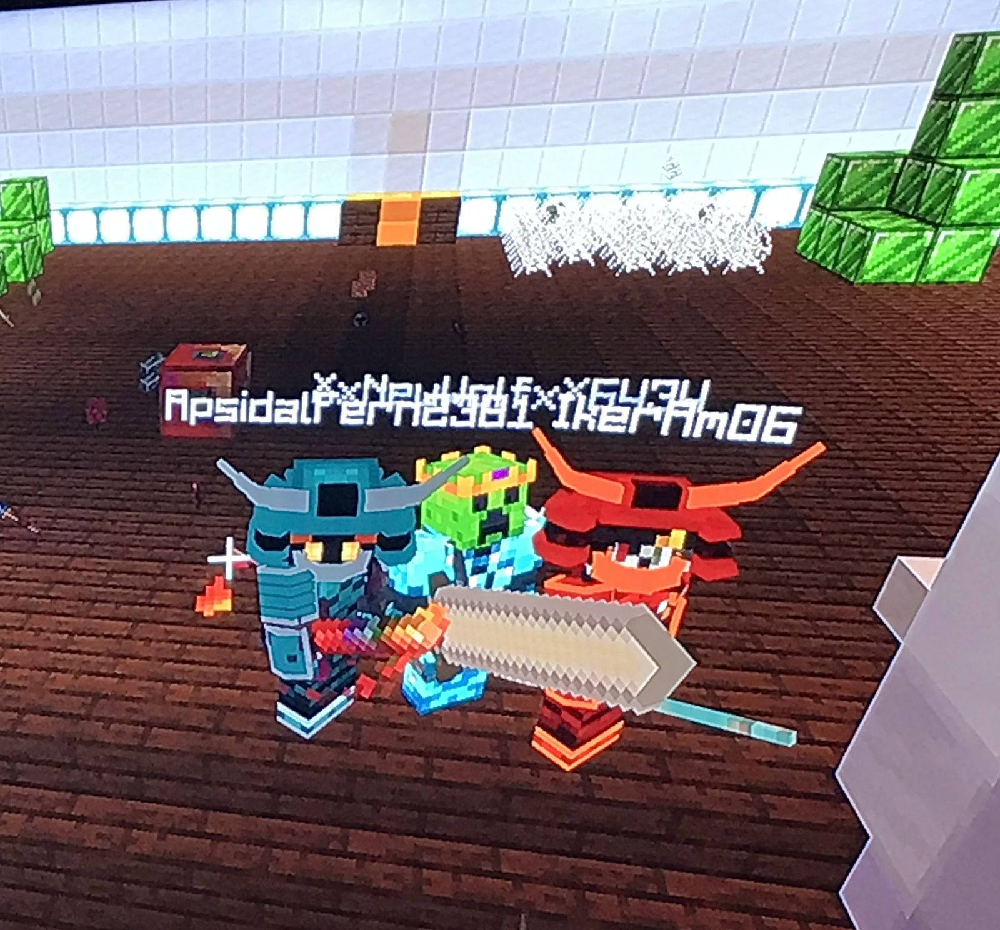
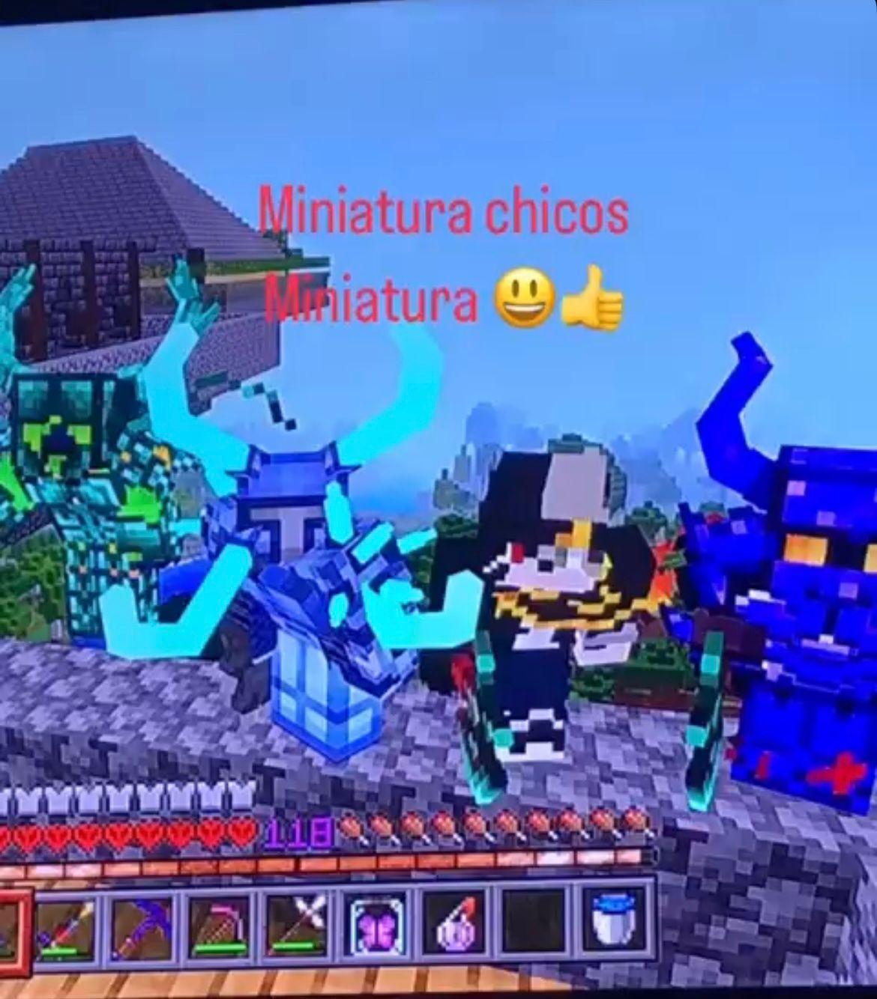
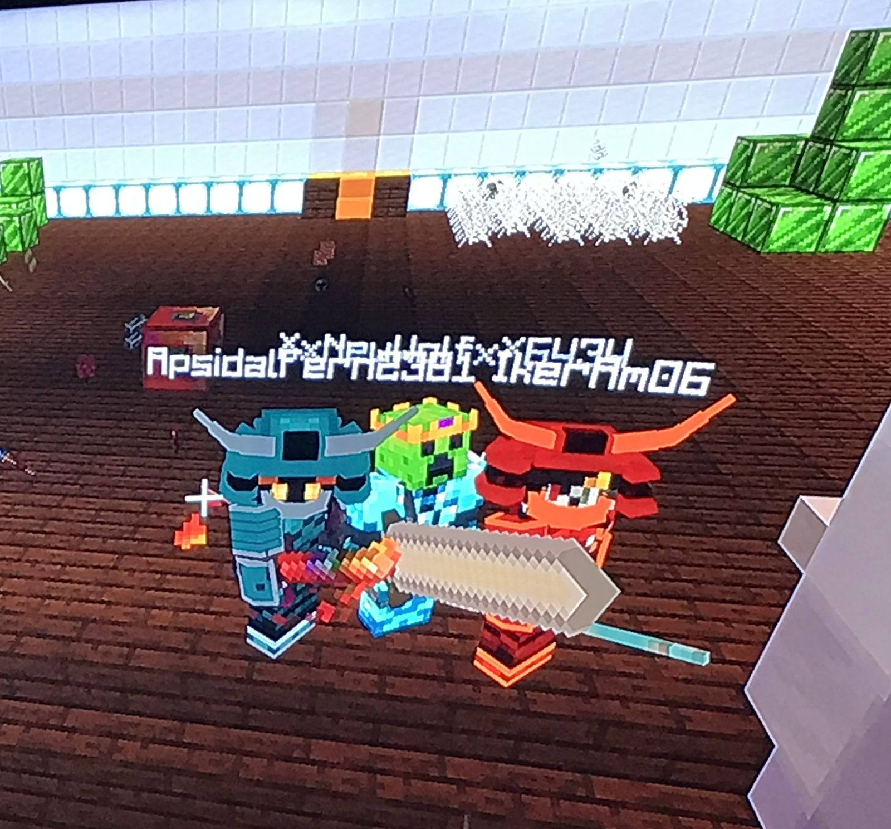
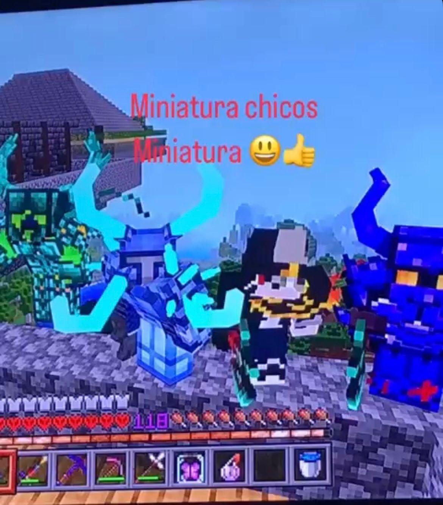
(Muchos siglos antes de la desaparición de los Titanes)
Mystical Craft fue un mundo abundante, místico y vibrante, nacido directamente bajo la mirada de los Tres Titanes. La tierra estaba saturada de vida: minerales imposibles, criaturas jamás vistas y una magia tan natural como el aire.
Durante esta era, los Titanes aún caminaban o se manifestaban en el mundo. No siempre con forma física, sino como señales de su presencia:
— Armaduras elementales samurái, una de agua y otra de fuego, vistas marchando solas en antiguos campos de batalla.
— Orbes brillantes en los cielos, que algunos juraban eran fragmentos del poder del Titán del Cosmos observando su creación.
Fue también la era de los antiguos guerreros.
Las crónicas hablan de un grupo que viajó hasta un pueblo ancestral, guiados por profecías que anunciaban la apertura de un portal. A través de él emergió el Primer y Ancestral Centinela, una entidad creada para custodiar el equilibrio mágico.
Tras ser derrotado, ese Centinela no fue destruido… Fue transformado.
De su legado nació la Organización Centinela, fundada con un solo propósito:
Evitar que los objetos y reliquias mágicas cayeran en manos equivocadas.
Mystical Craft fue el punto más alto de la creación. Pero ningún auge es eterno.
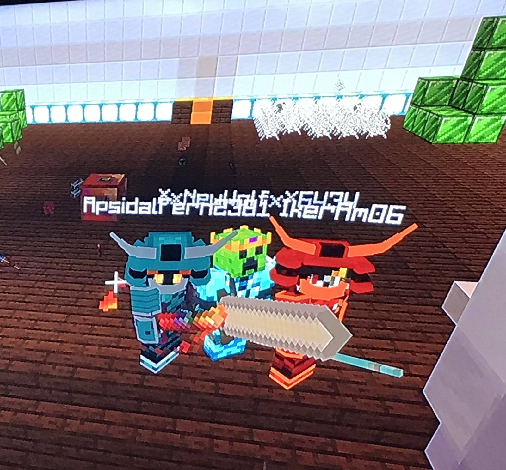
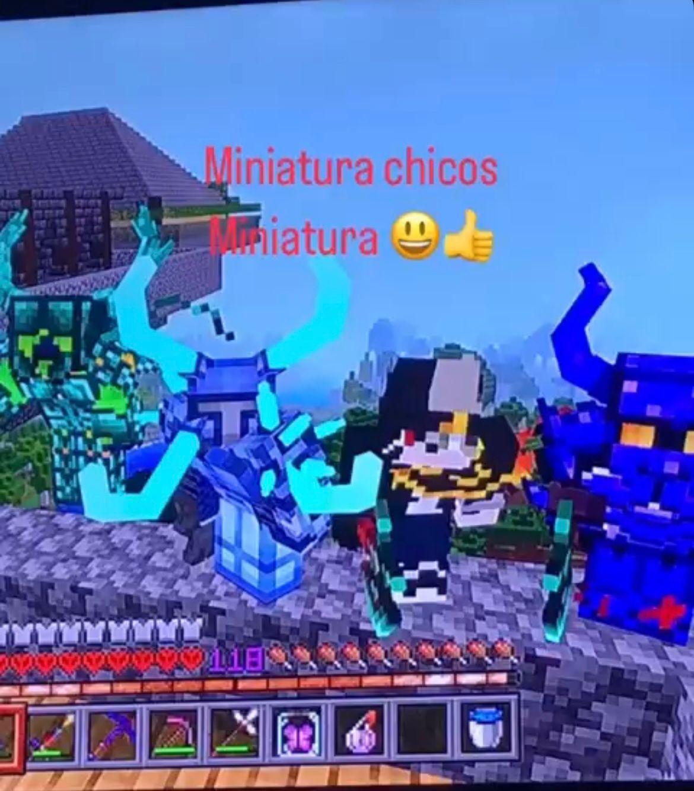
ERA II — LA DESAPARICIÓN DE LOS TITANES
El Silencio de los Creadores
El Titán del Cosmos, corrompido por su propio poder, alteró el equilibrio de la existencia. Su corrupción se filtró hacia el Titán de Hielo y el Titán de Fuego, deformando aquello que alguna vez fue armonía.
Para evitar la aniquilación total, los Titanes desaparecieron. Sellados, fragmentados o perdidos más allá de los planos conocidos.
El mundo sobrevivió… pero jamás volvió a ser el mismo.
El Titán del Cosmos, corrompido por su propio poder, alteró el equilibrio de la existencia. Su corrupción se filtró hacia el Titán de Hielo y el Titán de Fuego, deformando aquello que alguna vez fue armonía.
Para evitar la aniquilación total, los Titanes desaparecieron. Sellados, fragmentados o perdidos más allá de los planos conocidos.
El mundo sobrevivió… pero jamás volvió a ser el mismo.
ERA III — JN MEDIEVAL
La Era de la Tierra Estéril
(100 años después de la desaparición de los Titanes)
Cien años después, el mundo era plano, limitado y carente de abundancia. La magia se volvió escasa, los biomas repetitivos y la esperanza, frágil.
JNMedieval representó una era de supervivencia, no de gloria.
En este tiempo, un grupo de forasteros llegó a un pequeño pueblo buscando asilo. No eran héroes… aún no.
Cuando el pueblo fue amenazado por pillagers, los forasteros decidieron alzarse. Combatieron, resistieron y finalmente acabaron con la amenaza.
Ese acto marcó el nacimiento de nuevos héroes. Personas comunes obligadas a convertirse en leyenda.
Sin saberlo, habían llamado la atención de fuerzas mucho más antiguas.
(100 años después de la desaparición de los Titanes)
Cien años después, el mundo era plano, limitado y carente de abundancia. La magia se volvió escasa, los biomas repetitivos y la esperanza, frágil.
JNMedieval representó una era de supervivencia, no de gloria.
En este tiempo, un grupo de forasteros llegó a un pequeño pueblo buscando asilo. No eran héroes… aún no.
Cuando el pueblo fue amenazado por pillagers, los forasteros decidieron alzarse. Combatieron, resistieron y finalmente acabaron con la amenaza.
Ese acto marcó el nacimiento de nuevos héroes. Personas comunes obligadas a convertirse en leyenda.
Sin saberlo, habían llamado la atención de fuerzas mucho más antiguas.
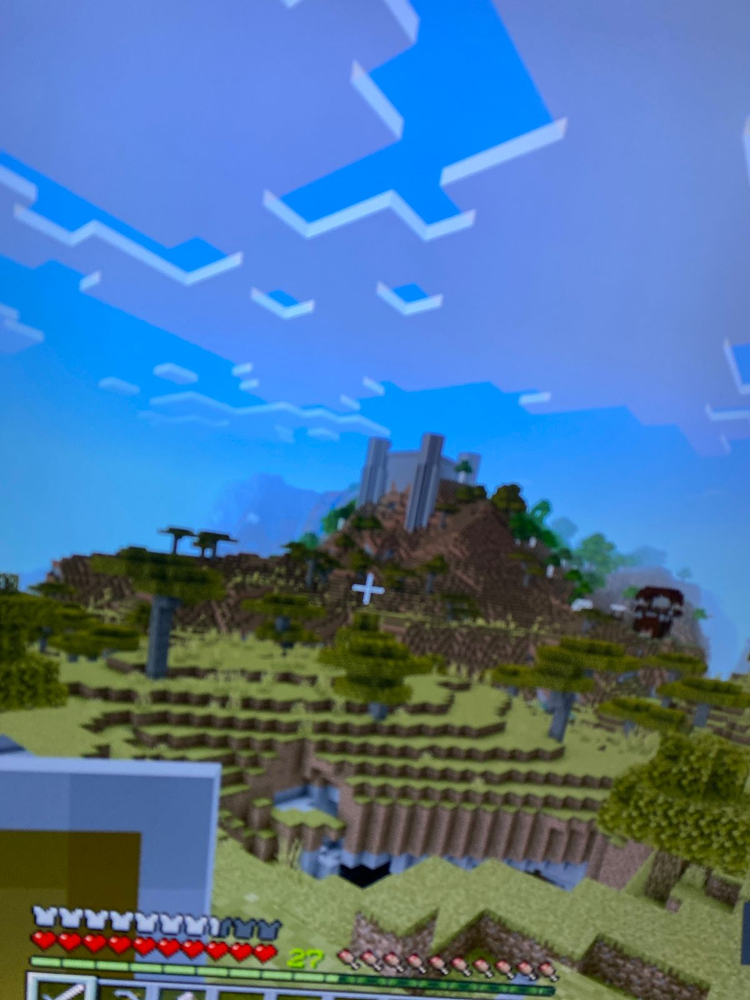
ERA IV — BRUMALIA
El Engaño del Hielo
Algunos de los héroes de JNMedieval fueron contactados por un mago del pueblo de Brumalia. Undoen prometía protección, equilibrio y salvación contra una extraña Bruma que consumía la región.
Pero la Bruma no era el enemigo.
Manipulados y guiados por mentiras, los héroes ayudaron al mago a cumplir su verdadero objetivo: despertar al Titán de Hielo.
Undoen buscaba absorber su poder y convertirse en una entidad suprema. Lo habría logrado… de no ser por Alexa.
Alexa, un ser de la misma dimensión que el mago, apareció de forma sutil: susurros, visiones, advertencias. Ella reveló la verdad y guió a los héroes hacia la traición necesaria.
Gracias a su intervención, Undoen fue detenido. Y el Titán de Hielo fue destruido definitivamente.
Por primera vez en la historia, uno de los creadores del mundo murió.
El equilibrio volvió… pero el vacío que dejó el Titán Helado jamás podrá llenarse.
Algunos de los héroes de JNMedieval fueron contactados por un mago del pueblo de Brumalia. Undoen prometía protección, equilibrio y salvación contra una extraña Bruma que consumía la región.
Pero la Bruma no era el enemigo.
Manipulados y guiados por mentiras, los héroes ayudaron al mago a cumplir su verdadero objetivo: despertar al Titán de Hielo.
Undoen buscaba absorber su poder y convertirse en una entidad suprema. Lo habría logrado… de no ser por Alexa.
Alexa, un ser de la misma dimensión que el mago, apareció de forma sutil: susurros, visiones, advertencias. Ella reveló la verdad y guió a los héroes hacia la traición necesaria.
Gracias a su intervención, Undoen fue detenido. Y el Titán de Hielo fue destruido definitivamente.
Por primera vez en la historia, uno de los creadores del mundo murió.
El equilibrio volvió… pero el vacío que dejó el Titán Helado jamás podrá llenarse.
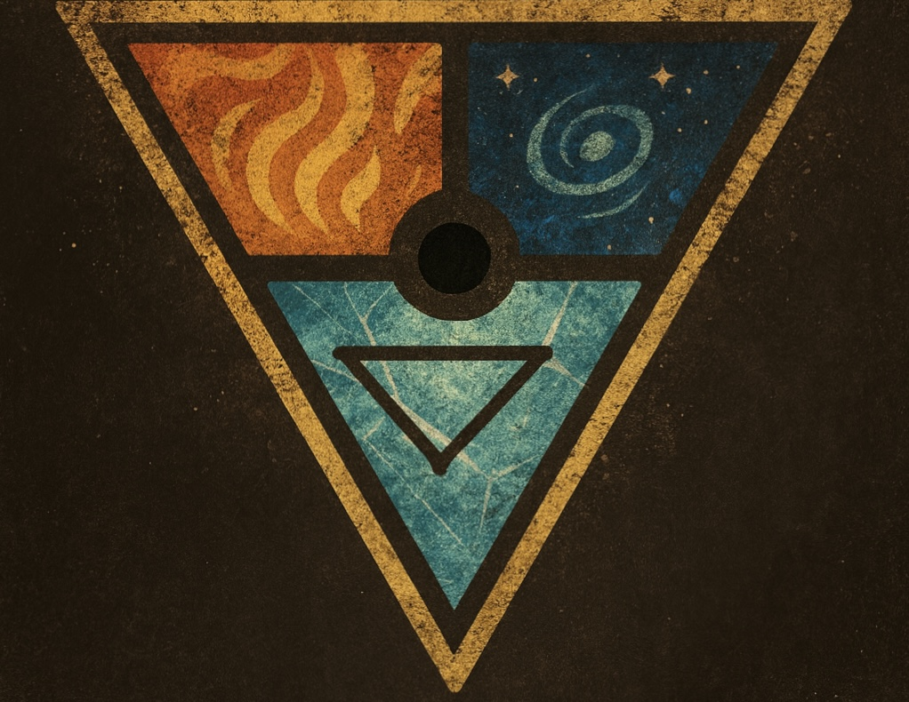
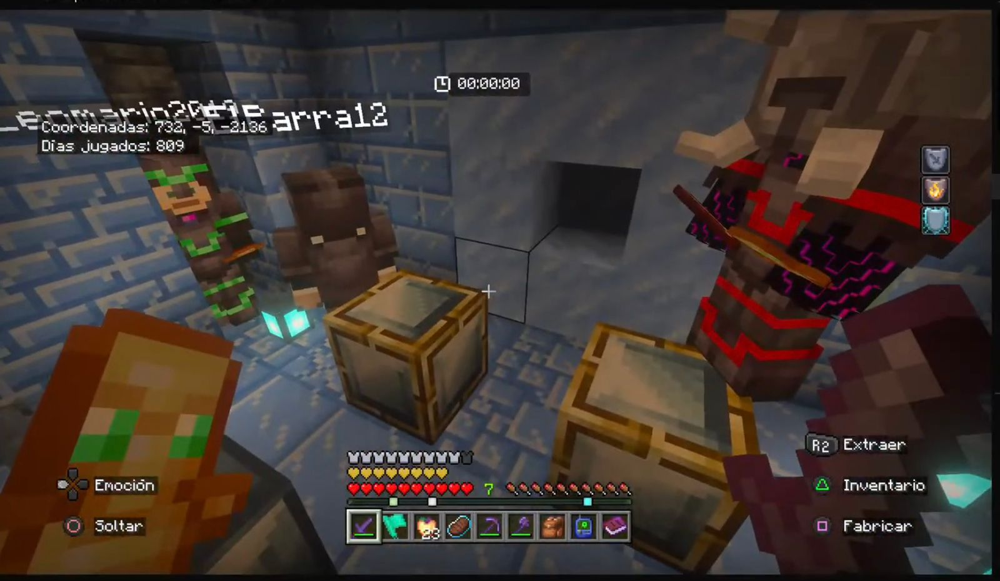
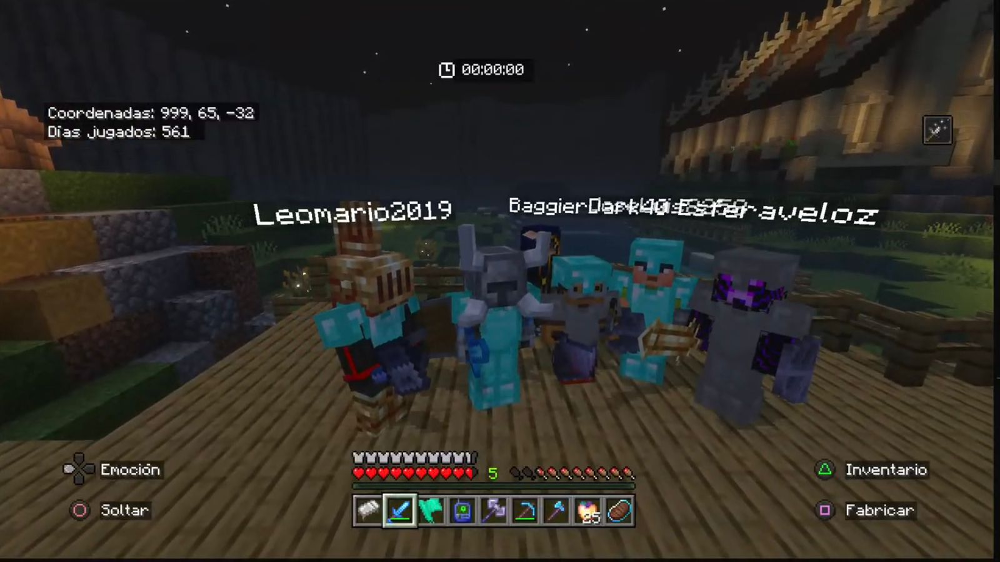
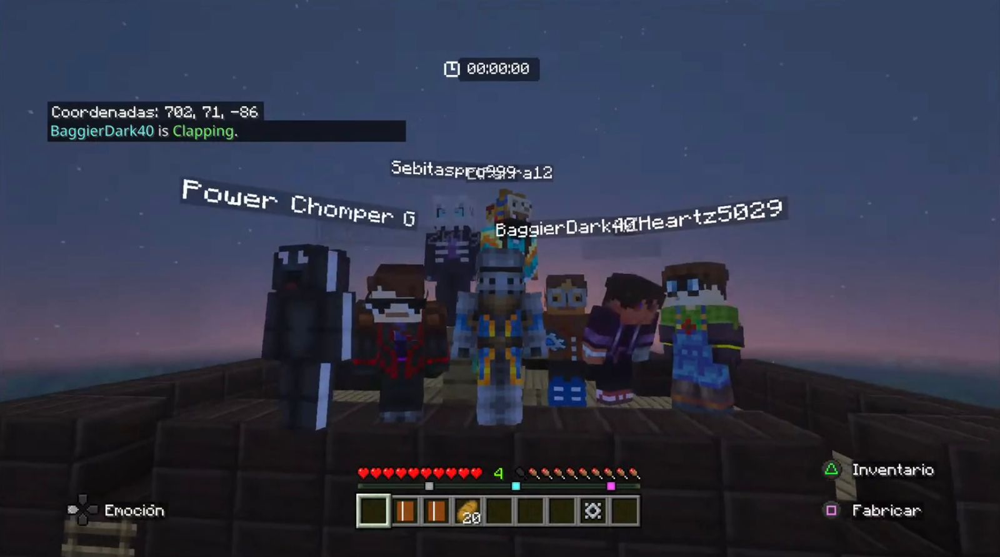
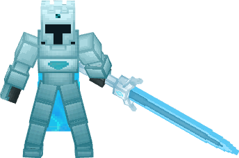